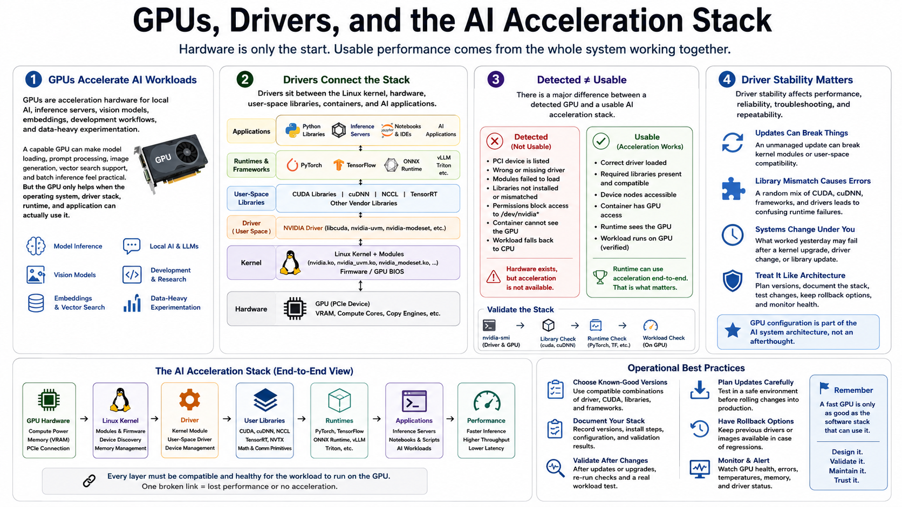

Why GPU Drivers Matter for Linux AI
Connecting to LMS... Progress: in progress

Narration
GPUs are acceleration hardware for local AI, inference servers, vision models, embeddings, development workflows, and data-heavy experimentation. A capable GPU can make model loading, prompt processing, image generation, vector search support, and batch inference feel practical. But the GPU only helps when the operating system, driver stack, runtime, and application can actually use it.
Drivers sit between the Linux kernel, hardware, user-space libraries, containers, and AI applications. The kernel needs modules and firmware to communicate with the device. User-space libraries expose compute capabilities to runtimes. Containers need access to the host driver and device nodes. Python libraries, inference servers, and notebooks depend on that whole chain being compatible.
There is a major difference between a detected GPU and a usable AI acceleration stack. A system may list a PCI device, but still fail to load the right driver, expose the wrong libraries, block access through permissions, or run the workload on the CPU by mistake. Good validation proves that the AI runtime can use acceleration, not merely that the hardware exists.
Driver stability affects performance, reliability, troubleshooting, and repeatability. An unmanaged update can break kernel modules. A random library mix can create confusing runtime errors. A system that worked yesterday may fail after a kernel upgrade. Treat GPU configuration as part of the AI system architecture, with planned versions, documentation, checks, and rollback options.